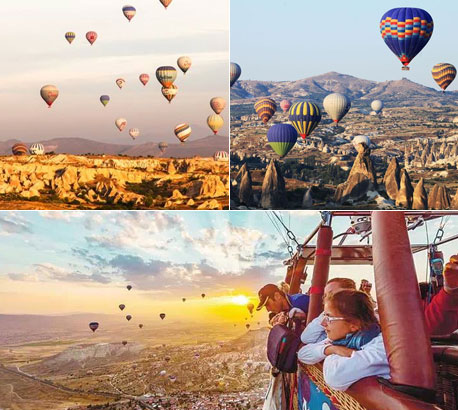

案例参考——热气球
土耳其卡帕多奇亚热气球
景观资源：
奇幻地貌、奇岩怪石、卡帕多奇亚洞穴教堂（格莱美露天博物馆）、当地民俗景观、女王头、热气球景观
体验内容：
- 早晨五点，专车接到游客在集中处休息茶饮后，乘车去升空的地方
- 热气球一字排开，用鼓风机给热气球充气
- 膨胀展开，点燃专用燃气喷嘴，火焰对准开口，加热囊内空气
- 伴随轰隆隆喷火声，热气球鼓立起来
- 热气球升到垂直于吊篮，进到吊篮
- 升空飞行开始，特别为游客提供低飞，横着飙向奇石山林，让游客近距离俯视昔日是民居的白鸽屋，缓缓上升
- 欣赏奇石林日出，无数喷着火焰的热气球不时从沟壑里冒出来
- 全方位欣赏广袤大地、峡谷沟壑
- 在空中偶尔相互接触，可以彼此挥舞打招呼
- 高度升高，慢慢宁静，看到悠远天际
项目介绍：
每位150英镑、历时约90分钟，一年四季均有团

八大热气球旅游圣地
| 土耳其卡帕多其亚 |
横跨亚欧大陆的土耳其汇聚了东西方文化的精粹，而被称为“精灵的世界”的卡帕多西亚是世界上最好的热气球旅行地之一。在这里，世上独一无二的喀斯特神奇地貌，让人有种进入外星的感觉。山峦起伏，沟壑纵橫，峡谷蜿蜒，童话般五彩斑斓的斑点层岩，神话般壮美的神奇“烟囱” 乘着热气球一路飞行，可以将自然奇迹与人文经典组合的完美景致尽收眼底。一边是五颜六色错落有致的热气球，一边是无尽的群山峡谷洞穴，日出日落时分，金色的光洒在这片黄土之上，一眼看不尽的旖旎景象！ |
外星、地貌 |
| 缅甸蒲甘 |
与吴哥窟齐名的蒲甘，是缅甸的佛塔之都。以万千佛塔的气势震撼人心。据说，在前后200多年间就建造了130000多座大小佛塔。漫步在街头巷尾都是佛塔矗立，可谓“出门见佛塔，步步遇菩萨”。无论清晨还是日落，蒲甘总会毫不吝啬地把最美的色彩呈现在旅人眼前，乘坐热气球饱览成了最美好的观赏方式。每年11月到次年3月，是这里乘坐热气球最的最佳时间。在晨曦的薄雾中，从林立的寺庙塔尖上穿过蒲甘古城，一座又一座的佛塔耸立在葱葱郁郁的树木中，仿如穿过一段悠长而神秘的历史。傍晚，当夕阳洒在蒲甘千座古塔和石庙金光闪现时，又彷如进入到未知的佛境世界，让人目眩神迷。 |
最美色彩、佛塔 |
| 肯尼亚马赛马拉 |
每年7-8月间，这里会发生世界上最壮观的野生动物大迁徙，数以百万记的角马，斑马和羚羊……会从坦桑尼亚的塞伦盖提草原千里迢迢迁徙到肯尼亚的马赛马拉草原。世界上最野性的动物踪迹都可以在这里找到。如果说你想找一处绝佳地点来观看这场盛世空前的大迁徙，那么乘坐热气球无疑是最直观，最生动的方式。清晨乘坐热气球在宁谧平静的晨曦中，穿过非洲这片原始土地的大草原和河流，数以千计的斑马和羚羊，跳跃的狮子和豹子就在你的脚下，通过俯瞰才更能体会到生命的热忱与磅礴。如果你是摄影爱好者，更是不能错过热气球之旅，这里拍摄角度是陆地上没办法实现的，只有在热气球上俯瞰马赛马拉才能真正感觉到那种一望无垠的开阔与壮观。 |
动物大迁徙 |
| 迪拜黄金沙漠 |
到迪拜旅游，除了纸醉金迷的城市，风光旖旎的海滩，更不能错过的就是迪拜的黄金沙漠了。乘热气球观光，从天空鸟瞰迪拜的沙漠，更是美得让人震撼！迪拜的沙漠风景，是只有亲眼见过才能体会其美丽与壮阔。金色的沙丘绵延在蓝天下面，像极了一副美丽的风景画。当第一缕阳关洒在迪拜的沙漠，周围是无边，壮阔的沙漠，随着热气球渐渐升高，身边早日也在渐渐绽放出它美丽的光芒，此时周围一切都那么的安静，站在至高处放眼望去脚下的这片壮阔，心里也会被这光，被这景，被这安静感动的吧。 |
黄金沙漠 |
| 意大利托斯卡纳 |
四季如画的托斯卡纳是意大利文艺复兴的发源地，比起壮美的天空，地面上的古堡，哥特式风格的建筑群，交错式黄绿相间的田园，世界著名的葡萄酒庄园更是热气球之旅的一大亮点。当第一缕阳光洒下，托斯卡纳黄绿相间的田野渐渐笼罩上醉人的金色。时光，无时不刻雕刻着这片土地的曲线与细节。乘坐热气球飘然俯瞰，沐浴在阳光下的托斯卡纳，其颜色与脉络宛如一幅出自世界著名大师手笔的美丽油画。连绵起伏的群山、如波涛般一望无际的田园、藤蔓遍布的葡萄园与橄榄林、传统的意式小镇、蜜糖色石头建成的农家小屋、优雅的罗马式乡村教堂、壮观的中世纪城堡……自然风景和人文建筑相得益彰！这般诗意美好的景色，叫人怎能不动心？ |
意式小镇 |
| 美国纪念碑谷 |
纪念碑谷在科罗拉多高原一个由砂岩形成的巨型孤峰群区域，属于印第安人纳瓦浩部落的保留地，是美国“西部荒原”永恒的标志。每年5月到10月可以搭乘热气球从空中鸟瞰纪念碑峡谷，茫茫戈壁滩上，红色的石碑、石丘、石塔和石柱千姿百态，霞光倾泻，就好像穿越到了现代文明被毁灭后的未来世界，不得不感叹大自然的鬼斧神工。这里的一山一石、一草一木都会令人心灵震撼，还有一种莫名的悲凉，令人叹为观止。 |
荒凉的戈壁滩 |
| 埃及卢克索 |
这里号称是全球最便宜的热气球，日出之前搭乘热气球起飞，伴着东方黎明的晨光缓缓生起，徜徉在蔚蓝纯净的天空中，别一番趣味。放眼望去，尼罗河畔古都底比斯的山川与河流，城市与农田，天空与神庙无不诉说着这颗上埃及明珠，悠悠数千年的历史与曾经的辉煌！控制热气球的工作人员还会在飞行过程中慢慢向地面，让你亲触一片甘蔗田，那种感觉真是美妙极了！ |
最便宜、城市田野 |
| 哥斯达黎加 |
被誉为“中美洲瑞士”的哥斯达黎加有名的不只是足球，还有热气球，乘热气球观赏热带雨林是这个中南美小国的独特景观。1991年这一观光项目就在阿雷纳尔火山附近区域兴起。热气球欣赏Tenorio火山和12819公顷的原始雨林，是一种什么样的感觉？或许只有真正的体验过才能够描述的出来。 |
原始热带雨林 |
国内的热气球旅游
热气球旅游在国内不火的一种观点
国内允许生产热气球的企业是军工企业，但生产的热气球不能用于旅游载客的商业行为，只允许用于表演、私人使用等，用国外的器材，经过民航局的审批，加起来的投入要超过200万，国内热气球的旅游市场需求并不大，很难收回成本。
发展条件本身就很苛刻：场地、气候、景观、经营单位、人才、相关法规、空域限制等等。
| 国内的热气球旅游 |
| 桂林阳朔——十里画廊 |
云南腾冲——火山景区 |
海南——三亚 |
河北——木兰围场 |
江西——婺源篁岭 |
四川——西岭雪山 |
新疆——天山天池 |